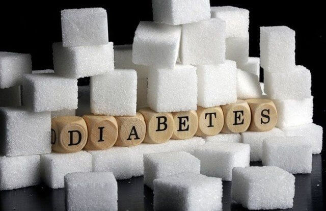

Цукровий діабет тип 1
Перший тип цукрового діабету характеризується втратою бета-клітин, які виробляють інсулін, так званих острівців Лангерганса, що призводить до дефіциту інсуліну. Головна причина втрати бета-клітин — автоімунне ураження Т-лімфоцитами. Поки не відомо жодного профілактичного заходу, що може запобігти захворюванню на діабет типу 1, на який припадає 10% від усіх хворих на цукровий діабет у Північній Америці та Європі. При діабеті цього типу чутливість до інсуліну звичайно нормальна, особливо на ранніх стадіях. Діабет першого типу може вражати як дорослих, так і дітей, але його традиційно називають «юнацьким діабетом», бо на нього найчастіше хворіють діти.

Лікування
Лікування цього типу діабету, навіть на ранніх стадіях, полягає в заміні інсуліну разом із ретельним контролем рівня глюкози в крові за допомогою глюкометра. Без інсуліну діабетичний кетоацидоз може призвести до коми чи навіть смерті. Також мають значення дієта та фізичні вправи. Окрім підшкірних ін'єкцій, зараз широко використовують і так звані інсулінові помпи, що дозволяють доставляти інсулін цілодобово на заданому рівні та можуть бути запрограмовані.
Лікування діабету типу 1 може тривати до кінця життя. Це лікування не порушує діяльності людини, якщо вона дисциплінована в дозуванні інсуліну та вимірюванні вмісту глюкози в крові. Середній рівень глюкози в крові для хворого на діабет типу 1 має бути якомога ближчий до нормального (80—120 мг/дл, 4—6 ммол/л). Деякі лікарі рекомендують 140–150 мг/дл (7-7,5 ммол/л) для тих людей, у яких виникають проблеми при нижчому рівні через часті напади гіпоглікемії. Рівень понад 200 мг/дл (10 ммол/л) інколи супроводжується дискомфортом та частими сечовипусканнями, що призводить до зневоднення. А рівень вище за 300 мг/дл (15 ммол/л) потребує невідкладного лікування, бо призводить до кетоацидозу, хоча при швидкому наданні допомоги не є небезпечним для життя. Низький рівень глюкози в крові сприяє розвитку гіпоглікемічної коми, яка своєю чергою може спровокувати еквіваленти епілептичних нападів та нестяму.